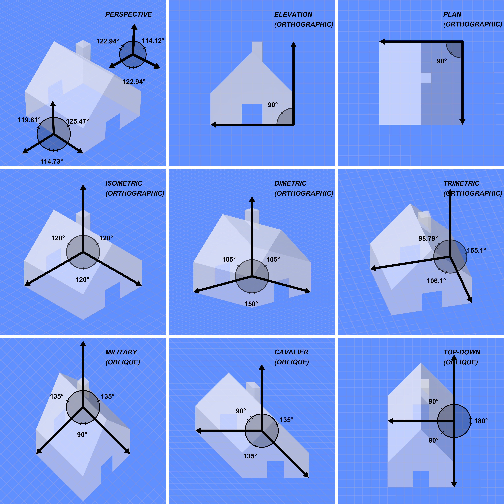
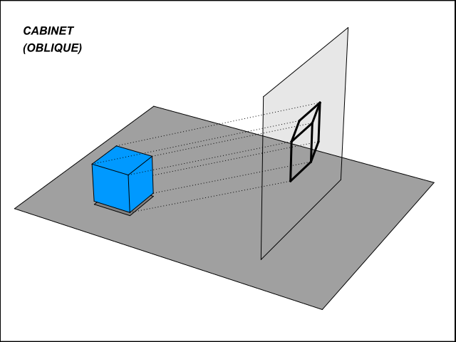
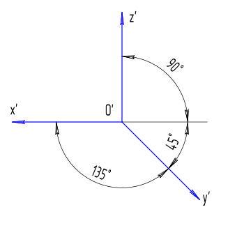
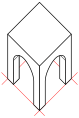
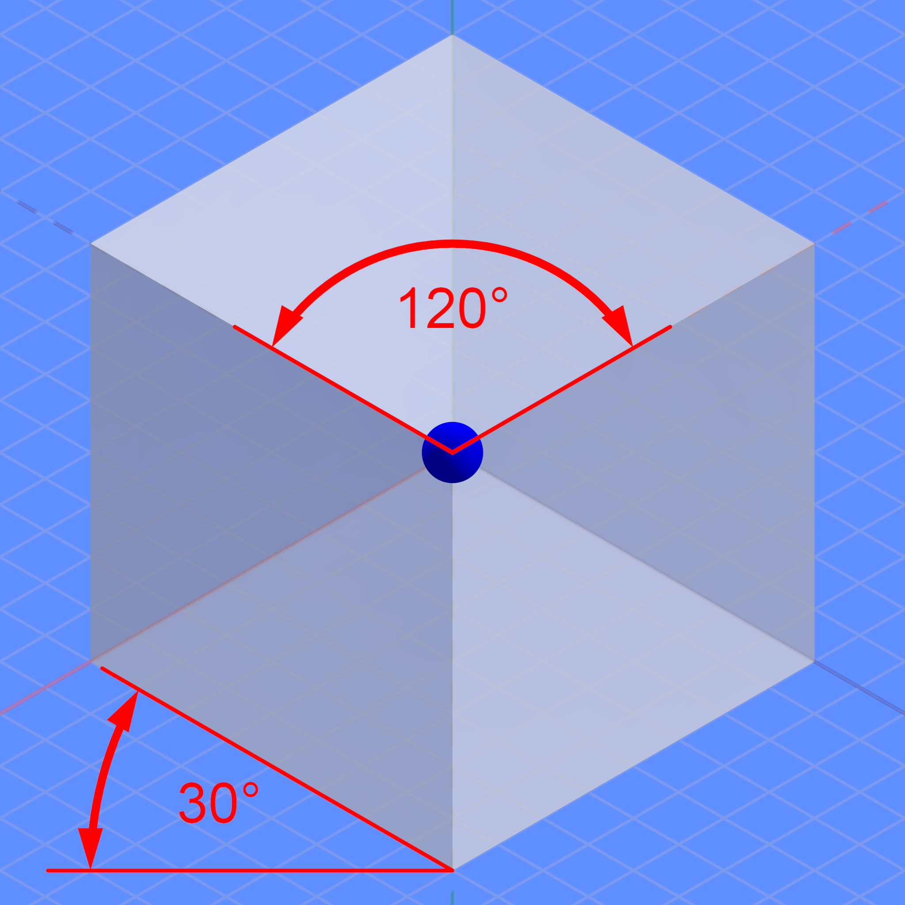

Locking down the camera view of the town map before any building art is committed — every asset is drawn on top of this decision. 30 projection options with a custom geometry diagram each, a clear recommendation, and a straight answer on rotation. Companion to Town Layout & the Art Style Board.
Short version: don't change the projection — invest in it. The ¾ high top-down with front-faced buildings that puzzleDrag2 already ships is the cozy-farming genre standard (Stardew, Sun Haven, Fields of Mistria, Roots of Pacha). The highest-value move is to raise its production value cheaply with lighting and polish, not to rebuild the whole square-grid stack for a diamond grid players don't demand.
Recommended
★ Keep the ¾ high top-down, then add a dynamic 2D lighting layer
puzzleDrag2 is a 2D Phaser pixel-art cozy farming/town game whose entire shipped stack assumes a 40x30 square grid of 32px tiles: the roadAutotile grass<->sand Wang autotiler, the hand-authored townMaps.ts with stable-additive lot indices, the seasonal-tile pipeline (77 tiles with per-season stills/idles/transitions), and a Y-depth-sorted billboard object layer. The current 3/4 high-top-down with front-faced buildings IS the genre standard — it is exactly what Stardew Valley, Sun Haven, Roots of Pacha, Fields of Mistria, Littlewood and classic Harvest Moon use, and it is what players of this genre expect. Every square-grid projection (current 3/4, pure top-down, cabinet oblique, oblique free-iso) preserves nearly the whole engine; only object art changes. Every diamond-grid projection (2:1 dimetric, true iso, military) forces a wholesale rewrite (col/row->screen transform, a new iso autotiler + tileset, re-laying-out every map, re-deriving lot indices) AND strands the Tuxemon ground art AND clashes with the 128px 3/4 seasonal board unless that is also redone — doubling the most expensive asset program for a look players don't demand. The town's KEY goal is to visibly GROW (outpost->hamlet->village->city); growth is already delivered by the growing-settlement-layout model (radial growth from an evolving landmark, receding wilderness, additive lots) which is projection-independent and works perfectly in the current 3/4 view. So the highest-value move is NOT to change the projection but to raise its production value cheaply: layer Eastward/Sea-of-Stars-style dynamic 2D lighting (warm lantern pools, glowing windows, dusk gradients) for the cozy-night diorama mood, and optionally a tilt-shift garnish rendered at higher internal res then downscaled (respecting the project's 'town smudge' golden gotcha). If, after lighting, the team still wants more building dimensionality, cabinet oblique is the runner-up because it keeps the square ground (autotiler, townMaps, camera math, Y-sort all stay valid), reuses the existing flat-front v2kit as a true elevation, and adds a half-depth side at 1 sprite/building with zero rotation art. True isometric is a pixel-art jaggy trap; 2:1 dimetric is the 'real isometric' but is a high-effort diamond rewrite; HD-2D and all free-rotation paths require leaving Phaser-2D entirely.
The cheap upgrade ladder (do these in order)
Ship the ¾ top-down as-is, but polish the art. Zero engine change — same grid, autotiler, townMaps.ts, seasonal tiles, Y-sort. This is variant 01.
Add a Phaser dynamic-lighting layer (warm lantern pools, glowing windows, dusk gradients) — the Sea of Stars / Eastward path. This is what delivers the cozy-night-diorama mood from your reference images. Variant 02.
Optionally garnish with a tilt-shift / DOF pass rendered hi-res then downscaled, for the "tiny model town" feel. Variant 19.
If — and only if — you still want more building dimensionality: move to cabinet oblique (variant 07, the runner-up). It keeps the square grid intact and reuses your flat-front building kit as a true elevation, at one sprite per building.
Critical gotcha (from the codebase). CRITICAL GOTCHA: the seasonal/board tiles already BAKE their own light, so adding real-time lights risks double-lighting — provide flat-lit tile variants or a normal-map pass for any tile under dynamic light, and render any tilt-shift/DOF at higher internal resolution then downscale (the documented 'town smudge' golden failure).
Your five reference images, mapped to this menu
Your image
What it is
Maps to
1 · Stardew farm
¾ high top-down, square grid, front-faced buildings
small as a SECONDARY presentation screen (a horizontal row, trivial layout reusing the v2kit); not a spatial world, so it can't replace the plot board.
Thirty distinct ways to frame the town, grouped by family and ordered roughly from "closest to today / cheapest" to "most exotic / total rewrite". Each diagram draws the same scene — a little house, a tree, a grid — through that projection, so you can compare angles directly. Diagrams are original schematics (not screenshots); real games are linked under each card.
Top-down family 1
Camera looks (nearly) straight down a square grid. The closest neighbours of what puzzleDrag2 ships today.
06
Pure top-down / bird's-eye (90 deg)
squarerot: none(fixed)Low
Angle: 90 deg straight down (orthographic plan view)
Camera straight down; the world is a flat plan with zero vertical face. A unit cube reads as a single top-face square; buildings are roof footprints, trees are canopy discs. Height shown only by drop-shadow/overlap. Ground autotiling is unchanged from today; only the OBJECT philosophy differs (roofs not facades). PixelLab's create_topdown_tileset defaults to exactly this.
Pros for us
Engine change essentially nil — still square grid/tilemap
Cleanest footprint packing: a building exactly fills its lot, no upward sprawl (kills the wide-building clip)
Simplest possible grid math, unambiguous adjacency/pathing, easiest autotiling
Least characterful — roofs-only towns read as floor plans; cozy charm and building identity drop hard
Breaks visual continuity with the 3/4 seasonal board tiles (town vs board would clash)
Tuxemon source art is 3/4, not 90 deg, so existing terrain looks subtly wrong next to true top-down objects
Throws away depth/Y-sort code for no gameplay gain
Assets: Author buildings as top-down roof footprints (no front wall), trees as canopy discs. Objects can sit ON the grid rather than billboarding upward, so no baseline anchoring needed.
Pipeline change: small — still a square grid and tilemap; stop drawing objects as upright billboards and lay them flat (no baseline anchor / Y-overlap needed). PixelLab create_topdown_tileset maps 1:1 onto roadAutotile.
Parallel projections — buildings get real faces/depth without perspective. Some keep the square grid (cheap), some go diamond (expensive).
★ Recommended
01
3/4 high top-down with front-faced billboard objects (current style / the "Stardew trick")
squarerot: none(fixed)Low
Angle: ~55-70 deg tilt; ground read flat on the square grid, objects upright with a visible front face
The style puzzleDrag2 ships TODAY and the dominant cozy-farming idiom. Ground is a flat square grid seen from a steep overhead angle (~55-70 deg, RPG-Maker/Pokemon-GSC look the Tuxemon sheet is drawn for); trees, buildings, fences and NPCs are drawn UPRIGHT showing their front face, anchored at their base and depth-sorted by Y. It is a deliberate, eye-accepted inconsistency (plan-view ground + elevation-view objects), not a true geometric projection. Height is faked by drawing objects taller and overlapping the row behind. This is exactly the current TownScene/townMaps/roadAutotile contract.
Pros for us
ZERO engine change — verbatim the existing TownScene/townMaps/roadAutotile/Y-sort contract
The proven cozy-farming idiom (Stardew-class) players instantly recognize
Buildings show a charming front face (door/windows/roof) so the town feels alive
Cheapest art: 1 sprite per building, 4 character facings; matches the 3/4 seasonal board tiles so town and board feel like one game
Tuxemon source art is native to this projection
Cons for us
Tall front-faced buildings occlude rows behind them (handled only by Y-sort; wide buildings on adjacent lots can clip)
Less true-3D volume / less 'wow' for a city-growth showcase than isometric
Geometrically 'incorrect' (purists dislike it) — but this is a feature for the genre
Assets: Keep the square tilemap floor (Tuxemon 32px) painted by the autotiler; place buildings/trees/NPCs as upright front-facing transparent PNG sprites anchored at base, depth-sorted by Y. Roof/front-wall split per building. This is puzzleDrag2's current model; onboarding cost is near zero.
Pipeline change: none — this is the existing 40x30 @ 32px square grid, the roadAutotile grass<->sand Wang autotiler, the seasonal-tile pipeline and townMaps.ts verbatim. Only art polish.
3/4 top-down with normal-mapped sprite lighting (Graveyard Keeper)
squarerot: none(fixed)Medium
Angle: flat-ish elevated 3/4 top-down; sprites lit as if they have volume
A refinement of the current model: still a 2D pixel top-down world with front-on sprites and a fixed camera, but every sprite carries a hand-authored normal map so a real-time light source illuminates 'up-facing' parts and shades the camera-facing dark side. Object altitude is tagged for fog/depth. Gives 2D pixel art 3D-lit volume and dynamic day/night without going 3D. Graveyard Keeper is the clearest published example.
Pros for us
Drop-in on the existing front-on 2D model — same grid, same camera
Adds tangible depth/volume and dynamic day-night lighting to flat pixel art
Could pair with the project's seasonal-transition lighting work
Cons for us
Roughly doubles per-sprite art (color map + normal map for every tile/building)
Normal-map authoring is specialist; risks inconsistency across 142+ tiles
Overkill for a cozy puzzle board unless dynamic lighting is a headline feature
Assets: Author the front-on color sprite AND a paired normal map (paint directional lighting, script-convert to normals); tag each object with an altitude value for fog/light falloff. Heavier per-asset than current, optional polish on the same base model.
Pipeline change: medium — grid/autotiler unchanged; adds a normal-map authoring pass per sprite and a dynamic-light pipeline. Same double-lighting caveat as the Eastward path.
Angle: ~65-75 deg tilt (steeper than the Stardew baseline)
The three-quarter view pushed toward vertical (~65-75 deg): ground dominates, object front faces are short/foreshortened — 'more map, less wall'. A unit cube reads as a large top square with a thin front strip. Good when reading the board/layout matters more than building character (tactics/strategy lean). FF Tactics reads steep.
Pros for us
Maximizes legibility of the town layout/grid (you see the plan clearly)
Still square grid -> trivial math
Less occlusion than a shallow angle
Cons for us
Thin front faces give buildings less personality than the cozy ~60 deg baseline
Can feel clinical/map-like rather than warm and storybook
Less dramatic, less 'place-like'
Assets: Same authoring model as current but with shorter front-face bands and a larger visible top. Single sprite per building, 4-facing characters.
Pipeline change: none-to-small — identical square grid and pipeline as current; only the building front-face:top ratio is tuned steeper. Re-authoring building art to the steeper ratio is the only cost.
Low-angle shallow three-quarter (cozy street diorama)
squarerot: none(fixed)Low
Angle: ~40-50 deg tilt (a low, near-horizon camera)
The three-quarter view pushed toward the horizon (~40-50 deg): big tall front faces, compressed ground, strong 'standing in the scene' feel. A unit cube reads as a large front wall with a sliver of top — the 'storybook diorama / cozy street' end of the spectrum, closest to looking at a village from across the square.
Pros for us
Maximum building character/charm — big readable facades, doors, windows, signs
Strong cozy 'place' feeling, very storybook
Great for a town/main-street showcase
Cons for us
Heavy occlusion: tall foreground buildings hide everything behind -> hard to fit a deep grid
Compressed ground makes a large board hard to read
Worse for gameplay that needs the whole layout visible at once
Assets: Author tall, detailed front facades with minimal visible roof/top; rely on Y-depth sorting and maybe a shallow grid (few rows deep). Good for a 'hero street', awkward for a big farm board.
Pipeline change: small — same square grid/pipeline; tall foreground occlusion may force a shallower (fewer-rows-deep) board layout, otherwise no engine change.
Angle: front face flat/frontal (true elevation); depth extruded at half scale (1:2), depth axis ~30/45 deg
The 'nicer' oblique and the cheapest dimensionality upgrade that KEEPS the square grid. The building front is a true undistorted elevation (reuse the flat-front v2kit directly), while the receding depth axis is drawn at HALF scale (1:2), so objects look correctly proportioned and you see front + a bit of side/top. This is the warm, readable look of SimCity Classic, Ultima VI/VII, EarthBound, Q*bert, Zaxxon — and exactly the spirit of puzzleDrag2's existing flat-front building kit.
Pros for us
Keeps the SQUARE grid — the entire town stack stays valid (the big win vs iso)
Front face = true elevation, so the existing flat-front v2kit drops in almost directly
Half-depth side adds real 3D charm without distortion — cozy and readable
ONE sprite per building, no facings — lowest art cost of any 3D-ish style
Strong precedent for town/city builders (SimCity Classic, Ultima, EarthBound)
Cons for us
Only one fixed viewing angle (no rotation)
Building/prop art must be re-authored for a consistent oblique extrusion + light; Tuxemon objects (3/4) won't match (Tuxemon GROUND still works)
Tall oblique objects extruded back can over-cover the lot behind; depth-sort tuning needed
PixelLab needs iteration to keep oblique consistent across many buildings
Assets: Author each building as a TRUE flat front (reuse existing elevation kit) + a half-length ~45 deg side/top extrusion, consistent light direction. One sprite per building, no facings. Square grid on screen; objects extrude up-right; depth-sort by Y.
Pipeline change: small — the GROUND stays a square grid so townMaps groundTiles, roadAutotile, mask stamps, clampCamera, pixel-coord lots and Y-sort ALL stay valid. Only object art is re-authored with a consistent oblique extrusion. PixelLab has no dedicated cabinet mode (approximate via side / high-top-down object views).
Angle: front face true/flat; depth axis recedes at 30 or 45 deg at full 1:1 scale
A non-perspective oblique where the front face is drawn flat and true (an elevation) and depth lines shoot off at 30/45 deg at FULL 1:1 length. Because depth isn't foreshortened, deep objects look exaggerated/stretched ('too deep'). A unit cube reads as a square front + a full-length 45 deg shadow-box side. Simple to draw (front undistorted) but cabinet is the better oblique for buildings.
Pros for us
Front face is a true elevation -> reuse flat facade art directly (cheap, charming)
Full-depth looks distorted/unnaturally deep — less appealing than cabinet for buildings
No grid tiling idiom; awkward for a tiled town board
Only one privileged facing
Assets: Author a flat true front (elevation) plus full-length 45/30 deg depth edges. Good for a single hero building; not for a tiled grid (use cabinet instead).
Pipeline change: medium — no clean grid tiling idiom (full-depth lines make tiles awkward), so it doesn't drop onto the current tiled board cleanly; best for a single hero building, not a tiled town.
Angle: high 3/4 / oblique — front faces of objects visible (full bodies), ground near-top-down; height is a separate vertical offset with a drop shadow
A pragmatic middle ground: the ground plays like a top-down SQUARE grid for movement/collision, but objects and characters are drawn in near-front elevation so you read their faces, with a separate vertical height axis + cast drop-shadow handling elevation/jumping. Cleaner to build than true iso (square math) while feeling dimensional. Moonlighter's shop is essentially a front-readable interior in this view.
Pros for us
Keeps a SQUARE grid (closest to current tilemap; drag hit-testing and autotiler stay)
Shows building FRONT faces clearly (shopfronts/cottages read well) while staying a navigable map
8-direction actor sprites only; no diamond math
Drop-shadow + height-offset is simple to implement for stacked/raised buildings
Cons for us
Less 'wow' than HD-2D or full iso
Depth-sorting of tall front-faced buildings still needs care
Mixing near-top-down ground with front-faced buildings can look inconsistent if angles aren't disciplined
Assets: Author ground tiles top-down-ish but buildings/props in front elevation with a consistent vanishing-free oblique; give every raised object a separate base footprint + drop shadow so the height axis reads. One baked light direction.
Pipeline change: small — keeps the SQUARE grid (drag hit-testing and autotiler stay in familiar square space); add a height-offset + drop-shadow trick for raised/stacked buildings. Largely reuses square-grid tooling.
Military / planometric projection (45 deg plan, true square top)
squarerot: 4-wayMedium-High
Angle: 45 deg plan rotation, NO tilt; top stays a true un-foreshortened square; verticals true length
An axonometric where the horizontal plane is ROTATED 45 deg but NOT tilted, so the top stays a true, un-foreshortened square; verticals are drawn vertical at true length. You take a plan view rotated 45 deg, then extrude walls straight up at full height. Reads very architectural / board-game. Distinct from iso because the top keeps right angles and true proportions. 45 deg geometry pixels cleanly (1:1 stair).
Pros for us
Top face stays a TRUE square -> plan/layout reads accurately (great for a buildable grid)
Full-height true walls give strong building presence
Clean 45 deg geometry pixels crisply
Nice 'tabletop diorama' charm
Cons for us
Less common/familiar than 2:1 iso, so less instant-recognition payoff
Tall full-height walls cause significant occlusion of rows behind
Still a non-square SCREEN footprint (diamond on screen) -> grid math rework vs the current board
Assets: Draw a true 45 deg-rotated square top (no vertical squash) plus full-height vertical walls. 45 deg edges pixel cleanly. 4 facings for asymmetric buildings; ground tiles symmetric. Engine needs a diamond screen transform + depth sort.
Pipeline change: medium-large — the on-screen footprint is a diamond, so the screen transform + depth sort change like iso even though the top stays a true square; townMaps coords and camera bounds need rework.
Angle: unchanged (fixed) base angle; sprite horizontally flipped for the opposite facing
Not true world rotation — a cheap trick where a single sprite is reflected horizontally (Phaser setFlipX) to face the other diagonal/direction. Universal for characters (walk-left = flipped walk-right) and some symmetric props that 'face' two ways. The camera/world never turns. Breaks on anything asymmetric (lettering, a one-side door, baked light direction), which then needs a real hand-authored variant. A near-free way to give townsfolk/animals/symmetric props two facings.
Pros for us
Essentially free for symmetric props/animals — Phaser setFlipX, no new assets
Lets townsfolk/animal sprites face both directions cheaply (a need the project already has)
Adds 'placed facing left vs right' variety for near-zero cost
Cons for us
Not real rotation — world/camera angle unchanged, so it doesn't solve occlusion or screenshot framing
Baked light direction flips with the sprite; highlight ends up on the wrong side for shaded pixel buildings
Asymmetric buildings (most of the set) gain nothing and need real redraws
Assets: Symmetric props/townsfolk get a free second facing via flipX; asymmetric ones (signage, porches, directional shading) must be redrawn or they look obviously mirrored with inverted light. Useful for characters and a few symmetric decorations, not a building-rotation substitute.
Pipeline change: none — runtime setFlipX; no grid/autotiler/townMaps change. Applies on top of whatever base projection is chosen.
The classic "diamond grid" look. Maximum 3D charm for a city — but a structural rewrite of the square-grid stack.
11
Dimetric 2:1 'pixel isometric' (26.565 deg)
diamond(rhombus)rot: 4-wayHigh
Angle: 26.565 deg dimetric, exact 2:1 pixel ratio
The de-facto 'isometric' of pixel games and what most people MEAN by isometric. Ground axes drawn at arctan(1/2)=26.565 deg via an exact 2:1 pixel run (2 across, 1 up), which makes every diamond edge a clean repeating 2px stair (crisp, no jaggies — the whole reason pixel art uses this over true 30 deg). Ground tile is a 2:1 diamond; a unit cube reads as top diamond + left + right wall. Best dimensionality for selling 'my town is growing into a city'. Classic of SimCity 2000, Civ II, RollerCoaster Tycoon, AoE2, Habbo, TheoTown, Pocket City.
Pros for us
Crisp pixel edges by construction (2:1 = clean stair) — looks pro
Best dimensionality for the 'growing city' headline; buildings read as little 3D models, overlap/occlusion reads naturally
Huge precedent for town/city builders specifically (SimCity 2000, RCT, TheoTown)
PixelLab has first-class iso support (create_isometric_tile, thin/thick/block thickness for height/stacking)
Cons for us
Diamond grid = real rework of the square board math, autotiler, drag hit-testing and Y-depth
Re-laying out every authored map + re-deriving lot indices; strands the Tuxemon set and clashes with the 3/4 seasonal board (doubles the art program)
Up to 4 rotation sprites per asymmetric building if rotation is ever wanted
Tall-object depth sorting/occlusion fiddly
Assets: Author 2:1 diamond ground tiles and buildings on 26.565 deg axes (clean 2-step edges) showing top + left + right faces; stack floors for height/growth. For rotation, 4 facings of asymmetric buildings. Engine: iso<->screen transform + Y depth sort. PixelLab create_isometric_tile fits.
Pipeline change: large — MAJOR rewrite: the whole town stack assumes a SQUARE axis-aligned grid. screen=(col-row)*tileW/2,(col+row)*tileH/2 transform replaces x=col*32; mask/paint/clampCamera/Y-depth/lot pixel coords ALL change; roadAutotile needs a new iso/Wang tile set + neighbour math; every townMaps map re-laid-out on the diamond and the stable-additive lot-index contract re-derived; clashes with the 128px 3/4 seasonal board unless that is also redone; Tuxemon ground art is unusable. PixelLab create_isometric_tile / create_tiles_pro(isometric) fit the art side.
Angle: camera 35.264 deg; on-screen ground axes 30 deg; ~81.6% foreshortening; diamond ratio 1.732:1
Geometrically pure isometric: camera tilted arcsin(1/sqrt3)=35.264 deg, plan-rotated 45 deg; on-screen ground axes at 30 deg, three cube axes exactly 120 deg apart, all equally foreshortened (~81.6%). Ground tile is a 1.732:1 diamond; a unit cube reads as a regular hexagon. Mathematically clean but the 30 deg / sqrt3 slope does NOT land on clean pixel steps, so it causes jaggy staircase edges — a pixel-art trap. Rare in pixel art; more common in vector/3D-rendered iso.
Pros for us
Mathematically clean, all axes equal — balanced look
Shows 3D volume (top + two walls)
Cons for us
30 deg / sqrt3 slope gives ugly anti-aliased staircase edges in PIXEL art — the reason pixel games use 2:1 instead
All the diamond-grid rewrite cost of 2:1 with worse fidelity (a trap)
Diamond grid complicates tile math/autotiling/pathing vs the square board
Asymmetric buildings need up to 4 rotation sprites
Assets: Tiles are 1.732:1 diamonds; buildings on 30 deg axes showing top + two walls. Avoid for pixel art unless you accept jaggies — prefer 2:1 dimetric. Engine needs iso<->screen transform and Y/depth sort.
Pipeline change: large — same diamond-grid rewrite as 2:1 dimetric PLUS worse pixel fidelity (the 30 deg slope shimmers). No practical advantage over dimetric 2:1 for pixel art; PixelLab's iso output targets the pixel 2:1 diamond, so true 30 deg is awkward to hit.
Angle: 18.43 deg (3:1) or 14.04 deg (4:1) from horizontal
Dimetric with a gentler slope than 2:1: ground axes at arctan(1/3)=18.43 deg (3:1) or arctan(1/4)=14.04 deg (4:1). Tiles are wide shallow diamonds; a unit cube reads as a wide squashed hexagon with a big top and short walls. Shows more of the board per screen and a less 'tall' look while still showing two walls. Integer ratios keep edges crisp.
Pros for us
More of the board visible at once (flatter)
Still clean pixel stairs (3:1/4:1 are integer ratios)
Less vertical occlusion than 2:1
Cons for us
Wide diamonds look unusual/less iconic than the familiar 2:1
Same diamond-grid rework cost as 2:1 with less classic-iso payoff
Short walls = less building character than 2:1
Assets: Author wide 3:1/4:1 diamonds and buildings on the shallower axis; keep integer pixel ratios. Same 4-facing rotation and depth-sort needs as 2:1.
Pipeline change: large — same diamond-grid rewrite as 2:1 dimetric with less of the classic 'isometric' payoff (wide diamonds look unusual).
Angle: all three axes at different angles + different scales (no canonical number)
The most general axonometric: all three axes at DIFFERENT angles and different foreshortening, so a unit cube shows all three faces each sized/sheared differently — a slightly more 'natural'/asymmetric look. Famously Fallout 1/2 and SimCity 4. Rare in pixel art because non-integer slopes hurt pixel cleanliness; common in pre-rendered/3D-to-2D pipelines.
Pros for us
Most flexible/natural-looking of the parallel views
Can tune the look precisely to taste
Cons for us
Worst fit for hand-pixel art (odd slopes = jaggies, hard to tile)
Hardest geometry to reason about for a grid game
Rotation effectively unsupported without re-rendering — overkill for a cozy 2D farm game
Assets: Best produced from 3D renders at the chosen trimetric camera, sliced to tiles; not practical to hand-pixel. Fixed single orientation. Avoid for puzzleDrag2's hand-pixel direction.
Pipeline change: total-rewrite — best produced from 3D renders sliced to tiles; not practical to hand-pixel cleanly; abandons the hand-pixel direction and the square grid.
Hex tiles (low-poly 3D, Dorfromantik) / hex projection family
hexrot: freeHigh
Angle: iso-ish default tilt (free orbit in the 3D version)
A hexagonal tile grid. Dorfromantik renders clean low-poly 3D hexes (houses, fields, rivers, rail) at an iso-ish default tilt with free orbit — a proven cozy tile-placement formula. Edge sockets (river/road/field) must line up across rotations. PixelLab also supports hex/hex_pointy tiles via create_tiles_pro for a 2D pixel route. Hex breaks the square-grid board model and the autotiler entirely.
Pros for us
Hex + low-poly 3D is a proven cozy tile-placement formula with free rotation
Edge-socket discipline maps conceptually to autotiler thinking
PixelLab supports hex/hex_pointy for a 2D route
Cons for us
Hex breaks the square-grid board model and the roadAutotile/townMaps coords
Edge sockets must read from every (3D) angle / 6 neighbours
3D version abandons Phaser-2D; a large departure either way
Assets: Author hex tiles (2D pixel via PixelLab create_tiles_pro, or low-poly 3D meshes) with matching edge sockets so river/road/field line up across neighbours. Re-lay-out townMaps on a hex grid; build a hex autotiler.
Pipeline change: large — hex breaks the square 40x30 grid, the screen transform, and the roadAutotile (square 8-neighbour) entirely; a hex autotiler + 6-neighbour socket system and a re-laid-out townMaps are needed. The 3D version also abandons Phaser-2D.
Angle: iso angle (2:1 dimetric typical), snapped to 4 quarter-turns
The classic 'rotatable isometric' for a 2D sprite engine: the world snaps between 4 fixed iso orientations (90 deg steps); the player presses rotate and every building swaps to its sprite for that facing. It genuinely solves occlusion (rotate to see behind a tower) but is the canonical proof of the art-multiply rule — SimCity 4's Building Architect Tool exports EACH building as 40 images (4 rotations x 5 zooms x day/night). Pharaoh added 4 cardinal views; Caesar III itself had none. This is the only way to get camera rotation while staying a 2D sprite game, at ~4x building art.
Pros for us
Real benefit: rotate to see behind tall buildings / back rows — fixes the genuine occlusion pain point while staying a 2D sprite game
Enables satisfying screenshot framing without going full 3D
4 snapped angles keep crisp pixel art (no sub-pixel shimmer)
Cons for us
~2.5-4x art on EVERY building PLUS 4x the seasonal-tile output (stills/idles/transitions per facing) — multiplies the most expensive asset work
Autotiler/road-growth/river/bridge/farm logic must all become orientation-aware — large engine rewrite
Per-angle visual goldens quadruple (already non-regenerable on this host)
Cozy-farming players don't expect or demand it
Assets: Each asymmetric building needs 4 pre-drawn faces (or 2 + mirrors if symmetric, which buildings rarely are); seasonal sets multiply 4x; the autotiler/road/river/farm logic must resolve in all 4 orientations; per-angle QA quadruples.
Pipeline change: total-rewrite — the diamond-grid rewrite of dimetric PLUS the autotiler, road-growth, river/bridge and farm-parcel logic in townMaps.ts all become orientation-aware; per-angle visual goldens quadruple (and goldens already aren't regenerable on this host).
Angle: 0 deg — pure side-on orthographic elevation; building fronts/cutaways, no top, no foreshortening; camera pans, gravity down
The world as a side cross-section / a parade of building facades facing the viewer (like a high-street). Terraria/Starbound build towns by stacking front-elevation cutaway rooms; the 'shopfront street' applies the same idea as a town strip. Orthographic elevation means proportions are exact and undistorted — clean, readable shopfronts and the natural home for the reference (c) flat-front farm building (which is literally one sprite). Parallax background layers give cheap depth, great at night with lit windows. Best as a town/menu SCREEN, not the playable plot board.
Pros for us
SIMPLEST building art — one flat front per building, no angled faces, no iso math; reference (c) drops in directly
Reads instantly as 'a shop'/'a cottage' — great for a clickable shopfront row or upgradeable town strip
Parallax layers give cheap depth and a strong night-time sense of place (lit windows)
Maps cleanly to a horizontal 'street' where each tier adds another storefront — easy to show GROWTH
Cons for us
A pure side-on town is a different game shape than a top-down draggable board — best as a SCREEN, not the puzzle board
Side view discards the depth axis, so 'placing buildings on plots' becomes 'arranging a row' — may not fit the plot-grid model
Flat facades alone feel like paper-doll cutouts without parallax/overlap/lit windows
Doesn't combine with the existing diamond/grid plot system without a mode switch
Assets: Author each building as a flat front elevation (orthographic, no perspective) with an optional lit-window/emissive layer; add 2-3 parallax background layers (sky, far hills, near foliage). Minimal art cost per building; use overlap + drop shadows + size variation to avoid a flat sticker-row.
Pipeline change: large for the main board (collapses a spatial axis — plots/roads/autotiler/townMaps coords lose meaning, needs a different scene type) but small as a SECONDARY 'main street' screen alongside the plot grid.
Pure side-on platformer view (Mario / Sonic / Terraria movement)
squarerot: none(fixed)Medium
Angle: 0 deg — camera level with the horizon, pure orthographic side elevation
The classic platformer/side-scroller view: camera level with the horizon, gameplay confined to a vertical XY plane (left/right + jump). A unit cube reads as a single side face; depth faked only with parallax. Included for completeness as the disambiguation outlier — cozy farm/life sims CAN be side-view (Spiritfarer, Kynseed), so 'cozy farm sim' does not imply top-down. Wrong genre for a top-down plot board.
Pros for us
Cheapest art (one side view + flip)
Great character personality in silhouette
Trivial 2D physics/grid
Cons for us
Cannot represent a 2D town LAYOUT / farm grid — wrong genre for puzzleDrag2
No sense of a plot of land you build out
Only a vertical slice of the world is visible
Assets: Author side-profile sprites; flip horizontally for the opposite direction; layer parallax backgrounds for depth. Not applicable to a buildable town grid.
Pipeline change: total-rewrite for a town LAYOUT — cannot represent a 2D plot/farm grid; a different genre and scene type entirely.
Angle: pure side-on cross-section, single composed screen
A focused single-screen variant of side-elevation: the playfield is a clean vertical cross-section (surface dome on top, mined caverns below) in crisp, well-lit pixel art — a tight, composed single framed diorama-strip rather than a scrolling world. Relevant if a town screen wants to be one framed strip where vertical growth (build up/down) is instantly legible.
Pros for us
Single-screen composed framing is simple to lay out and very readable
Cross-section makes vertical growth/upgrades instantly legible — could map to settlement tiers stacking
Crisp pixel art, no rotation or iso math
Cons for us
Very specific to a cut-away mining fantasy; less natural for a cozy surface town
Single-screen limits the sprawling-town feeling the growth goal wants
Niche look, weak fit for the plot-grid board
Assets: Author a fixed single-screen composition with flat side-on building/terrain sprites and one consistent light direction; emphasize clear silhouettes since everything shares one frame. Minimal per-asset cost.
Pipeline change: large for the main board (single-screen cross-section is a different scene concept than the 40x30 explorable plot grid); niche fit.
Angle: 0 deg head-on frontal; no depth axis (or a token shadow)
Buildings presented head-on as a row of facades (a 'main street' frieze) arranged left-to-right with no ground perspective — a presentation/diorama style for shop menus, town selectors or storybook spreads rather than a navigable world. A unit cube reads as a flat square front. Charming for a 'visit the shops' / town-directory screen; reuses the flat front building art with zero distortion. Best as a SECONDARY screen paired with the playable board.
Pros for us
Maximum facade charm/readability — great for a shop row / town directory / storybook screen
Reuses flat front building art (v2kit) directly with zero distortion
Dead simple layout (a horizontal row), trivial to compose
Cons for us
Not a spatial world: can't represent a 2D plot/farm layout or movement
No depth -> feels like a menu/diorama, not a place you build
Best as a SECONDARY presentation screen, not the main board
Assets: Author flat front facades only, arrange in a horizontal row with a baseline + optional ground strip + cast shadow. Ideal for a shop/town-directory screen using the existing elevation kit; pair with the 3/4 board for the playable world.
Pipeline change: small as a SECONDARY presentation screen (a horizontal row, trivial layout reusing the v2kit); not a spatial world, so it can't replace the plot board.
Angle: same ~55-70 deg 3/4 top-down as current; the upgrade is lighting, not camera angle
The cheapest 'premium' upgrade that stays inside a 2D engine: keep the exact 3/4 square-grid top-down pipeline but layer REAL dynamic lighting, day/night, warm lantern pools, fog/god-rays and optional reflections on top. Sea of Stars stays a pure 2D pixel pipeline and adds dynamic lighting + real-time water reflections at 640x360; Eastward bolts Pixpil deferred 3D lighting onto flat top-down pixel art. This is the most achievable path to the cozy-night-town diorama mood without leaving Phaser.
Pros for us
Reuses the entire square grid, drag hit-testing, autotiler and existing seasonal tiles
Warm night lights (glowing tavern windows, hanging lanterns) directly serve the cozy-night-town reference
Keeps the hand-pixel identity; no per-rotation art
Cons for us
Real-time lights over already-baked-light tiles double-light them — needs flat/neutral tile variants or normal maps (extra per-asset work)
Reflections/distortion are extra shader work, not free
Still a 3/4 top-down, not a 'shopfront row' presentation
Assets: Author tiles relatively flat/neutral (or add normal maps) so dynamic lights read; keep a consistent 3/4 angle. Add an emissive/light layer for lit windows and lanterns. Render any blur at higher internal res then downscale (the project's 'town smudge' golden gotcha).
Pipeline change: small-to-medium — grid/autotiler/townMaps all unchanged; add a Phaser lighting/normal-map layer. GOTCHA: the seasonal/board tiles already BAKE their own light, so dynamic lights risk double-lighting — needs flat-lit tile variants or a normal-map pass.
Angle: camera-agnostic; sharp center band, progressive blur toward near/far edges over any base angle
A presentation FILTER, not a projection: blur the extreme foreground/background while keeping a focused middle band, tricking the eye into reading the world as a tiny physical model (photographic miniature faking). Aonuma used it for Link's Awakening to make a small world feel like a hand-built diorama; Parkitect exposes it as a slider. Pairs best with rounded, toy/Playmobil-like, slightly oversaturated shapes and warm night lighting. Layers over EITHER a top-down or isometric base without changing the projection.
Pros for us
Cheapest path to the 'cozy miniature town' feeling — a post shader over the existing board, no projection change or art redraw
Strongly reinforces the diorama/toy-town vibe
Tunable (slider) — subtle or strong; works over top-down or iso
Pairs beautifully with warm night lighting and bloom
Cons for us
A garnish, not a structure — alone it doesn't make a town 'grow' or read as buildings; needs a good underlying layout
Pixel art + heavy blur fights (smudge risk) unless rendered hi-res then downscaled
Overuse looks gimmicky; bottom blur can hide gameplay-relevant tiles on an interactive board
Assets: Favor rounded, chunky toy-like silhouettes and slightly exaggerated, warm, oversaturated palettes; render/blur at higher internal resolution then downscale so the tilt-shift doesn't mud the pixels. No new sprites for the effect itself.
Pipeline change: small — a post-process shader layered over the existing board; no grid/autotiler/townMaps change. GOTCHA: blurring crisp low-res pixels looks like a smudge (the project's 'town smudge' golden failure) — must render/blur at higher internal res then downscale; bottom-edge blur can hide interactive tiles.
3D world with billboarded 2D pixel sprites (Paper-Mario / 2.5D), rotatable
nonerot: freeVery High
Angle: 3/4 perspective 3D camera, free orbit + zoom
A true 3D environment (real ground mesh, real depth) populated by flat 2D pixel-art sprites that billboard toward the camera, a la Paper Mario / Snacko. Because the world is 3D the camera can orbit and zoom freely while characters/props stay charming pixel cutouts — one of the few ways to keep pixel art AND a rotatable camera. Kainga shows the same trick with a free-orbit camera, at the cost that billboards read as thin 'cardboard cutouts' when orbited (fine for small characters, jarring for big buildings).
Pros for us
Keeps the beloved pixel-art aesthetic while allowing FREE camera rotation
3D handles depth/occlusion/lighting automatically
Cheaper art than full 3D: keep painting 2D, only terrain/props that must read 3D become meshes
Cons for us
Requires a real 3D engine — a wholesale departure from the Phaser 2D board
Billboarded sprites look flat/like thin cardboard at oblique angles — bad for large buildings
Far more engineering than a cozy puzzle board warrants; still needs 3D terrain
Assets: Build a 3D terrain/scene; author 2D sprites that billboard (always face camera) or have enough angles to survive rotation. You inherit 3D engine complexity (lighting, depth-sort, collision) but keep 2D art. Not a fit for Phaser-2D without an engine change.
Pipeline change: total-rewrite of the engine — requires a real 3D engine + billboard system + 3D ground beneath the sprites; abandons Phaser's 2D tilemap board, though it keeps the 2D pixel art itself.
Angle: high-angle ~3/4 that must tilt enough to separate the stacked slices into apparent height; the whole stack rotates freely
A voxel model sliced into horizontal cross-sections; the slices are drawn bottom-to-top each offset slightly, creating a fake-3D volume that rotates 360 deg in real time. The only listed 2D-ish style that gives FREE rotation of buildings without per-angle hand art — but the look is inherently chunky/voxel, not crisp hand-pixel, and reads best only when the camera actually moves. Tools: SpriteStack.io / MagicaVoxel pipelines.
Pros for us
The only 2D-ish style giving FREE 360 rotation of buildings without redrawing per angle
Buildings become little turnable models — very 'toy diorama' in motion
Some artists prefer authoring stacked slices over angled hand-iso
Cons for us
Inherently voxel/chunky — clashes hard with the project's crisp seasonal hand-pixel identity
Many slices per object (memory/draw cost) and needs a moving camera to justify it; a static cozy town doesn't benefit
Big pipeline change (voxel modeling); hard to make it read cozy/warm
Assets: Model objects as voxels or hand-author horizontal slices; engine draws N offset slices per object and rotates them. Light baked into voxel colors. A different pipeline from tile sprites.
Pipeline change: large — adopt a voxel toolchain (MagicaVoxel/SpriteStack) for buildings; the engine draws N offset slices per object and rotates them; a big departure from the 2D tile workflow and the crisp hand-pixel identity.
Curved-world fixed-angle 3D (Animal Crossing rolling-log model)
nonerot: 4-wayVery High
Angle: a few discrete fixed pitch presets (3) + horizontal rotate; world geometry curved to hide the horizon
A 3D world where the camera is NOT free: it snaps among a few discrete fixed angles (AC:NH = 3) and lerps between them, with a vertex-displacement 'curved world' shader bending terrain so each angle shows roughly the same amount and the horizon stays hidden. Buildings have ground-level entrances to fit the curvature. It supports SOME angle choice while keeping a tightly art-directed, always-flattering frame — but players still grumble about occlusion, so rotation doesn't fully satisfy the desire it promises.
Pros for us
Constrains rotation to a few flattering, art-directed frames — keeps a cozy composed look while giving SOME angle choice
Bounded per-angle work vs free rotation; always-good framing
Proven cozy-game model balancing control vs art direction
Cons for us
The curved-world shader only pays off in real 3D; in 2D pixel it collapses back to multiple hand-drawn angles (4-way ~2.5-4x cost) with none of the shader's free framing
Players still complain about occlusion even WITH this model — so it doesn't fully 'solve' rotation
Still a meaningful engine + asset investment for a nice-to-have
Assets: Buildings/terrain authored to look right only at the chosen fixed angles (entrances at bottom); requires a curved-world vertex shader + per-angle camera tuning. In 2D pixel it degrades to the 4-way hand-drawn cost.
Pipeline change: total-rewrite — the curved-world vertex shader only pays off in real 3D; in 2D pixel it collapses to authoring multiple hand-drawn angles (the diamond/iso 4-way cost) without the shader benefit.
Real meshes. The only families where camera rotation is genuinely free — at the cost of leaving Phaser-2D and the pixel pipeline.
20
HD-2D (Octopath / Square Enix diorama 2.5D)
nonerot: freeVery High
Angle: ~45-60 deg low-to-ground tilt with a WIDE FOV that flattens the scene while preserving depth; tilt-shift focal plane blurs near/far
Pixel-art character/prop sprites (billboards) placed inside a fully 3D-rendered environment, then post-processed with tilt-shift, depth of field, bloom, volumetric light/fog, real point-light shadows and parallax so the frame reads like a lit tabletop diorama / pop-up book. Coined by Square Enix for Octopath Traveler. Towns are 3D geometry dressed with 2D facade/prop sprites — a built set, not a tilemap. Highest perceived production value.
Pros for us
Highest perceived production value — instantly reads as premium / 'a cut above other pixel games'
Tilt-shift + DOF + warm point-lights are exactly the cozy-lantern-night-town mood
2D sprites can stay hand-pixeled while lighting/atmosphere is done in-engine — a small team punches above its weight
Camera can gently move for drama without re-authoring art (billboards auto-face)
Cons for us
Requires a real 3D scene + lighting pipeline — a large jump from the current tilemap board
Billboard sprites that always face camera fight a believable 'building row' — buildings become 3D meshes/angled cards, not flat front sprites
Authoring tilt-shift/DOF/bloom convincingly is finicky; done badly it looks like a cheap blur
Conflicts with the baked-light seasonal tiles; overkill for a 2D drag-puzzle loop
Assets: Sprites authored flat (front-facing billboards) but lit-neutral so engine point-lights/shadows do the shading — conflicts with the project's baked-season tiles that already bake their own light. Ground/buildings become 3D geometry or angled cards. You stop authoring a tile atlas and start authoring a lit scene.
Pipeline change: total-rewrite — true HD-2D needs a real 3D scene + lighting pipeline; Phaser is 2D, so this means a 3D layer (Three.js/Babylon) or faking DOF/tilt-shift with shaders. Billboard auto-facing sprites fight a believable building row (buildings usually become 3D meshes/angled planes). Conflicts with already-baked-light seasonal tiles.
Low-poly 3D + pixelation post-process (A Short Hike)
nonerot: freeVery High
Angle: free-ish 3D third-person; default near-iso tilt, free rotate
Build a low-poly 3D world with flat cohesive shading, no AA, soft outlines, then apply an adjustable PIXELATION post-process. You get a chunky retro/pixel LOOK with full free camera rotation — the strongest 'have your pixel cake and rotate it too' route — but the source assets are 3D meshes and the 'pixels' are a shader, so the hand-painted seasonal-tile craft would not transfer.
Pros for us
Strongest template for 'retro/pixel look + free rotation': render low-poly 3D, pixelate in post
The art is 3D meshes, not hand-drawn sprites — pixels are a shader, not the source art
Hand-painted seasonal-tile craft wouldn't transfer directly
Full pipeline + engine change away from the current board
Assets: Low-poly 3D models + a screen-space pixelation/flat-shade shader. The most relevant 'pixel + rotation' route, but assets are 3D meshes.
Pipeline change: total-rewrite — low-poly 3D models + a pixelation/flat-shade shader; abandons Phaser-2D and the PixelLab hand-pixel pipeline (the seasonal hand-painted tiles wouldn't transfer; pixels become a shader).
Full 3D models and lighting, but the camera is deliberately pinned to one Stardew-style 3/4 angle and cannot be rotated by the player (zoom only). Looks like an HD/3D evolution of the classic farm-sim view. Coral Island shipped at 42.5->37.5 deg; Fae Farm and AC:NH are also effectively fixed-angle. The framing is the closest 3D analog to puzzleDrag2's fixed-angle 2D board — and it proves even 3D cozy games choose fixed for readability/art direction.
Pros for us
Framing matches the project's fixed-angle readable board (good reference for camera feel)
3D lighting/seasons for free
Proof that even full-3D cozy games deliberately choose a fixed angle
Cons for us
Requires 3D assets + engine; incompatible with the current 2D Phaser board
Fixed angle still causes occlusion that flat 2D front-on art avoids
Loses the pixel-art cozy charm
Assets: Author full 3D building/prop models seen from one angle (back faces optimizable). Grid conceptually square. Not the project's pipeline, but the framing is the closest 3D analog to the fixed-angle 2D board.
Pipeline change: total-rewrite — requires 3D assets + engine; not compatible with the current 2D Phaser board. Useful mainly as a CAMERA-FEEL reference for the fixed-angle 2D board.
Curved/irregular-grid free-orbit 3D mesh (Townscaper)
diamond(rhombus)rot: freeVery High
Angle: ~60 deg default tilt, fully free orbit (no snap)
The canonical 'rotation is free because it's real 3D' case. Blocks are placed on an irregular quadrilateral grid (a hex grid subdivided into quads, then jittered); the engine assembles true 3D meshes live via Wave Function Collapse + marching-cubes corner placement, so the camera orbits smoothly 360 deg (a soft near-iso default tilt). Buildings are authored as 300+ modular CORNER segments with adjacency rules, not whole-building sprites — you cannot use flat pre-drawn building sprites.
Pros for us
Proof that free rotation + a cozy curated look CAN coexist — but only via real 3D meshes
Modular corner-piece approach yields huge variety from a small authored set
Defines the modern cozy-builder look
Cons for us
Completely abandons flat pixel sprites — requires a 3D mesh + WFC pipeline and a real 3D renderer
Far heavier engineering than a 2D Phaser board
No reuse of the existing pixel art
Assets: Author small modular 3D corner pieces with adjacency/connection rules + WFC constraints, plus stencil-cut details and procedurally-scattered props. Style lives in the mesh + shading, not a 2D canvas.
Pipeline change: total-rewrite — needs a 3D mesh + WFC/marching-cubes pipeline and a real 3D renderer; cannot use flat pixel sprites at all. Far heavier than a 2D Phaser board.
Full 3D, free-orbiting camera (Cities: Skylines / Timberborn / Against the Storm)
squarerot: freeVery High
Angle: free orbit + free pitch, near-ground to top-down
Real 3D building meshes on 3D terrain with a free-orbiting, free-pitching camera (and free building rotation with R). Rotation is genuinely free because the GPU re-renders existing geometry from any angle at zero ART cost — the cost moves entirely upstream to a heavyweight 3D asset pipeline (per-building mesh + LOD + diffuse/normal/spec textures, per Cities: Skylines modding docs) and a real 3D engine. The 'far end' of the spectrum for a town builder; abandons Phaser-2D and pixel art.
Pros for us
The only family where camera + building rotation is genuinely FREE
Square-grid colony layout maps well to a farming/town game (Timberborn)
Cons for us
Total tech change: abandons Phaser-2D + sprite/tilemap; TownScene/townMaps/autotiler/canvas bridge irrelevant
PixelLab cannot author it — discards seasonal tiles, building SVGs, Tuxemon, the whole pixel pipeline
Maximal art + engineering cost; mismatched with a pixel-art identity; we don't even rotate today so the benefit is unused
Assets: Every building/tile becomes a 3D mesh + materials (+ LOD + PBR-ish textures) authored to look correct from all sides; real-time lighting/shadows replace baked pixel shading. Totally incompatible with the current architecture.
Pipeline change: total-rewrite — Phaser 2D + sprite/tilemap pipeline abandoned for a 3D renderer; TownScene, townMaps, autotiler and the React canvas bridge become irrelevant; PixelLab cannot author meshes. Zero reuse of existing pixel work.
NO — do not build camera rotation. The genre evidence is decisive: every cozy-farming pillar (Stardew, Coral Island, Sun Haven, Fae Farm, Animal Crossing) ships without free world rotation, and Coral Island is the clincher — it is already a full 3D game yet its devs deliberately LOCKED the camera to a zoomable bird's-eye with no rotation, because the cozy genre chooses a fixed, art-directed, readable frame even when rotation would be technically free. The cost/value ratio for puzzleDrag2 is upside-down. In a sprite engine, every rotation step MULTIPLIES art (SimCity 4 = 40 renders/building); 4-way rotatable iso would cost ~2.5-4x art on EVERY building, 4x the seasonal output (4 seasons x 4 facings before idles/transitions), a from-scratch orientation-aware autotiler/road/river/farm rewrite, and 4x the visual goldens (already non-regenerable on this host). 8-way or pre-rendered-3D abandons hand-pixel craft; free 3D (Townscaper/Timberborn) is a different engine and a different game. And rotation doesn't even fully satisfy the underlying desire — Animal Crossing's 3-angle curved-world model still draws occlusion complaints. The fixed single angle is precisely what lets hand-painted pixel art look its best (baked light direction, anti-aliasing, hue-shift). The ONLY viable path if rotation is ever a hard requirement is a full 3D reboot (real meshes -> free rotation, e.g. the Cities: Skylines / Timberborn / Townscaper path, or low-poly-3D + pixelation a la A Short Hike) — out of scope for a cozy 2D puzzle-farming game. Instead, address the real wants cheaply WITHIN the fixed view: fade/x-ray tall sprites that occlude the player's row (a standard Stardew trick), camera pan + zoom + a simple photo mode for screenshots, and free horizontal mirror (setFlipX) for symmetric props/townsfolk facing.
Why rotation is so expensive in a 2D sprite game
In a sprite engine the world isn't 3D geometry — it's hand-drawn pictures. Every angle you let the player turn to is another full set of pictures someone has to draw. Rotation is "free" only when the GPU re-renders real meshes (i.e. a full 3D game).
Rotation model
Art per building
What it costs us
Seen in
Fixed (1 angle) ★
×1
Nothing — today's model. Lets baked light, AA & hue-shift look their best.
Stardew, Cozy Grove, Bastion, TheoTown, Coral Island (3D, still locked)
Mirror-only (flipX)
×1–1.5
Free 2nd facing for symmetric props/townsfolk; breaks on handed art & baked light. Not real rotation.
universal for characters
4-way iso (90° steps)
×2.5–4
Every building re-drawn 4×; seasonal tiles ×4 (4 seasons × 4 facings); orientation-aware autotiler/road/river/farm rewrite; ×4 visual goldens.
SimCity 4, Pharaoh, RCT2
8-way / pre-rendered
×8 or 3D-to-sprite
Abandons hand-pixel craft; you're really running a 3D pipeline that bakes to sprites.
Diablo II (actors only), AoE2
Sprite-stacking
N voxel slices
Free 360° spin but a chunky voxel look that fights the crisp seasonal art; needs a moving camera.
Delver
Full 3D meshes
×1 mesh (free angles)
Rotation truly free — but it's a different engine & a different game; discards the entire pixel pipeline.
Townscaper, Timberborn, Cities: Skylines
The clinching data points.Coral Island is a full 3D farm sim — rotation would be free — yet the devs deliberately locked the camera to a fixed ¾ bird's-eye for readability. SimCity 4's Building Architect Tool exports 40 images per building (4 rotations × 5 zooms × day/night) — the canonical proof of the art-multiply. Age of Empires II rotates units but renders buildings one direction only, because building rotation is where the cost explodes. Even Animal Crossing's curved-world 3-angle model still draws occlusion complaints — so rotation doesn't even fully deliver what players think they want.
What to do instead (within a fixed camera)
Fade / x-ray tall sprites that occlude the player's row — the standard Stardew trick, solves the real occlusion pain.
Camera pan + zoom + a photo mode for screenshot framing (we already pan/zoom).
Free horizontal mirror (setFlipX) for symmetric props, animals and townsfolk facing — near-zero cost variety.
If rotation ever becomes a hard requirement, the only sane path is a full 3D reboot (Timberborn / Townscaper / low-poly-3D + pixelation) — out of scope for a cozy 2D puzzle-farming game.
Formal projection figures
License-clean reference diagrams (Wikimedia Commons) for the geometry behind the families above. The two most decision-relevant alternatives to our ¾ view are cabinet oblique (the runner-up) and the isometric/dimetric diamond — both shown here.

The master map: one object rendered through orthographic, isometric, dimetric, trimetric, oblique and perspective projection. Every family in this doc lives somewhere on this chart.Wikimedia Commons · CC BY-SA 3.0 / GFDL · SharkD

Cabinet oblique — a cube above a plane. True front face, half-depth side. This is the runner-up projection (variant 07): it keeps the square ground while giving buildings real volume.Wikimedia Commons · CC BY-SA 4.0 · SharkD / Datumizer

Isometric vs dimetric vs oblique-front axis schemes — the geometry behind the "diamond grid" families (variants 11–14).Wikimedia Commons · Public domain · Yuri Raysper

Military / planometric projection — the plan is rotated 45° but not tilted, so the top stays a true, un-foreshortened square (variant 10).Wikimedia Commons · CC BY 4.0 · Wittiko

True isometric: the camera sits at 35.264° (arctan(sin 45°)). Mathematically pure, but the 30° on-screen slope does not land on clean pixel steps — the pixel-art jaggy trap (variant 12).Wikimedia Commons · CC BY-SA 4.0 · SharkD
On "reference images from online". The per-proposal visuals are original schematic diagrams (the cleanest way to compare 30 angles side-by-side, and IP-safe to commit). Real games that exemplify each view are linked below and under every card — rather than committing copyrighted screenshots into the repo. The 5 figures above are freely-licensed and attributed (see refs/ATTRIBUTIONS.md).
Reference games — see each view in the wild
46 games surveyed, grouped by the view they exemplify. Every link opens the official/Steam/Wikipedia page.